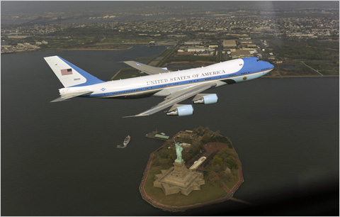
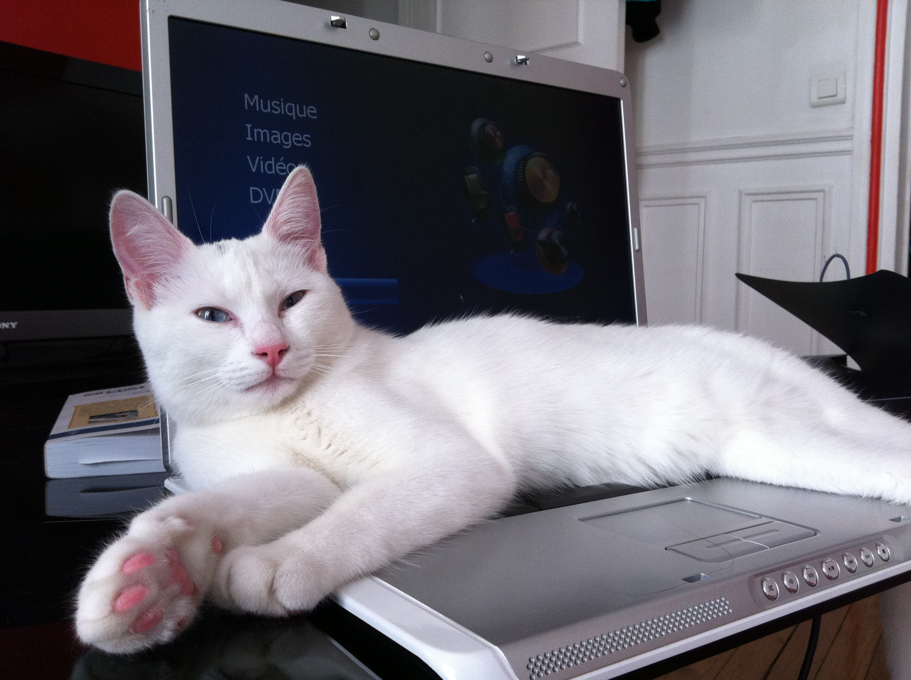

S'en est suivi presque deux ans d'allers-retours entre Paris et Angoulème. La SNCF s'est grassement rémunérée des débuts de notre relation.
Nous nous sommes rencontrés à 10000m d'altitude. Olivier voyageait seul pour aller passer une semaine avec ses amis en stage au USA, Elisabeth allait découvrir New York avec sa famille. Nous avons commencé à sympathiser en jouant aux cartes dans l'avion. Nous avons eu tout le temps d'approfondir car notre avion a dû stationner 3 heures à Boston en attendant la fin d'un orage.
S'en est suivi presque deux ans d'allers-retours entre Paris et Angoulème. La SNCF s'est grassement rémunérée des débuts de notre relation.
Ensuite nous avons eu le bonheur de vivre ensemble à Paris durant ces 2 dernières années. Nous nous sommes pacsé, avons adopté une fille. Il ne manquait plus qu'un beau mariage pour concrétiser notre union.
